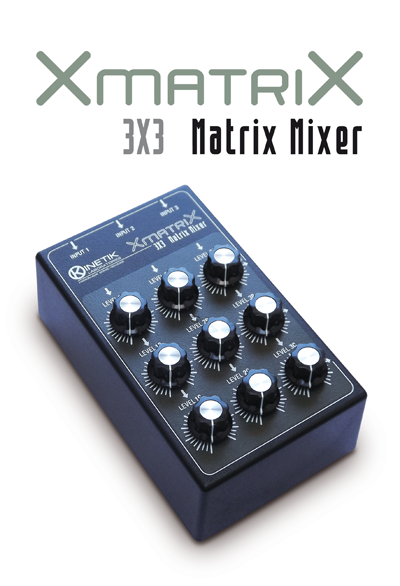

Production year: 2013
Xmatrix is a passive matrix mixer with 3 inputs and 3 outputs. It can be used to distribute signals to different effect chains and amplification systems or to control the gain of feedback loops when used in no-input configurations.
Xmatrix routes multiple input signals to multiple outputs, allowing different mixes from a common set of signals.
It does not require power supply.